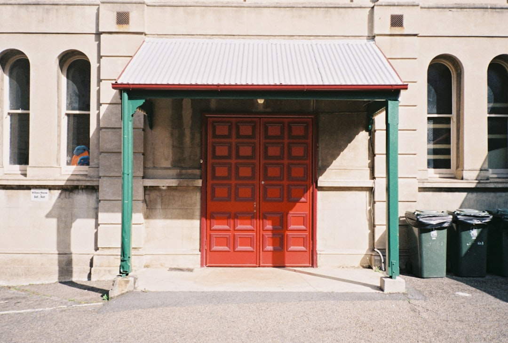

For most Brisbane southside households, the practical benchmark is the published price guide plus the written quote on site. The listed 2026 ranges are $120 to $200 for a standard service call-out, $220 to $450 for torsion spring replacement, $180 to $320 for lifting cable replacement, $160 to $300 for track roller replacement, and $600 to $1,100 for opener or motor replacement. The technician then inspects the door and quotes before work starts.
For Brisbane households comparing garage door repairs brisbane options, the useful first step is to line up the fault, the likely repair path and the planning range before anyone attends.
Garage Door Repairs Brisbane Explained
Southside Garage Doors lists the problems it sees most often across Brisbane southside homes: broken springs, faulty openers, jammed roller doors and off-track sectional doors. That is a better starting point than asking for a broad estimate, because each fault points to a different inspection, parts list and repair path.
Before requesting a visit, note the door type, what changed, and whether the door still opens, closes or secures. The published guide also says more detail on the problem and your suburb helps the callback happen faster. A short, accurate description usually gives you a cleaner first conversation than trying to diagnose the whole job yourself.
- State whether the door is sectional, roller or tilt.
- Name the visible fault, such as a snapped spring, worn cable, remote issue or off-track movement.
- Say whether the door can still shut and lock, or whether access and security are affected.
Use the published ranges as a planning tool
The most useful hard numbers are the repair ranges published on the page. A standard service call-out is listed at $120 to $200, lifting cable replacement at $180 to $320, track roller replacement at $160 to $300, torsion spring replacement at $220 to $450, and opener or motor replacement at $600 to $1,100. These figures help you tell the difference between a smaller adjustment and a repair that may need parts.
The same guide is careful about limits. It says the figures are general guidance only, and that real prices vary by door type and size, spring and hardware condition, opener brand, site access and after-hours surcharges. That means the range is useful for planning, but the written fixed-price quote is the point where scope becomes real.
There is also a published comparison point for replacement. A new single sectional door supplied and installed is listed at $2,500 to $5,000, which helps frame whether repeated repairs on an ageing setup still stack up.
Know when the issue needs prompt attention
Some faults are less about convenience and more about whether the garage can be secured. The page specifically mentions snapped torsion springs, worn lifting cables, openers that have stopped responding, off-track or derailed doors, panel and section replacement, remote and keypad programming, and emergency call-outs for a door that will not secure.
That list is useful because it changes the questions you ask. If the door is off track, will not close properly, or has stopped responding, ask whether the likely job is an adjustment, a part replacement, or a broader inspection once the technician sees the door. If a panel or section is damaged, ask whether the fix is limited to that component or whether the rest of the door hardware also needs checking.
For an opener fault, separate the mechanical symptoms from the powered side of the job. A clear description of what the remote, keypad and motor are doing can make the inspection more efficient.
Check the quote for scope, not just the total
The page says the attending technician provides a written fixed-price quote before work begins. That matters because two quotes can look similar at first glance while covering different work. One may only cover the obvious failed part, while another may include the related hardware or the adjustment needed to get the door running correctly again.
A useful quote check is simple. Does it identify the diagnosed fault, the parts to be replaced if any, and whether the issue sits in the door hardware, the opener, or both. If your door has become noisy, rough or uneven, ask whether the quote is for a single failed item or for the broader cause of the problem.
For powered openers, the page also states that where mains electrical work is needed, that part is carried out by a licensed electrician under Queensland law. If that possibility exists, ask whether it is included in the written scope or whether it depends on what is found on site.
Who this applies to on Brisbane southside
This guide is aimed at residential households in the Brisbane southside areas named on the page, including Tarragindi, Camp Hill, Holland Park, Coorparoo, Carindale, Mount Gravatt, Wishart and Sunnybank. The location detail matters because the published service area is not all of Queensland or every commercial door type. It is a local residential repair guide for common call-outs.
It is most useful when you are deciding between three practical next steps: book a standard repair visit, ask for a clearer diagnosis before approving work, or compare a larger repair with the replacement benchmark. If your issue involves a door that will not secure, a spring or cable failure, or an opener problem that may involve electrical work, the published fault list gives you a grounded checklist for that first call.
The goal is not to predict the exact invoice from your driveway. It is to go into the quote process with the right fault description, the right planning range and the right questions about scope.
- Identify the door type. State whether the door is sectional, roller or tilt before describing the fault.
- Describe what changed. Explain whether the problem is a spring, cable, opener, remote, keypad or off-track movement, and whether the door still secures.
- Send the key booking details. Include your suburb and preferred callback or visit window, because the guide says more detail helps the callback happen faster.
- Read the quote closely. Before approving work, check that the written fixed-price quote identifies the diagnosed fault and the proposed scope.
| Situation | What to confirm | Published guide |
|---|---|---|
| Standard service visit | Door type, suburb and preferred visit window | $120 to $200 |
| Spring or cable fault | Whether the spring has snapped or the cable has failed, and whether the door still moves | $180 to $450 |
| Opener or motor issue | Whether the remote or keypad responds, and whether mains electrical work may be involved | $600 to $1,100 |
| Replacement comparison | Whether repeated repairs are pushing the door into replacement territory | $2,500 to $5,000 for a new single sectional door supplied and installed |
Common questions
How much do common repairs usually cost? The published guide lists $120 to $200 for a standard service call-out, $220 to $450 for torsion spring replacement, $180 to $320 for lifting cable replacement, $160 to $300 for track roller replacement, and $600 to $1,100 for opener or motor replacement. It also says those figures are general guidance only, with final pricing varying by the door, hardware, access and timing.
What details should I have ready before requesting a quote? Have the door type, the main fault, whether the door still moves or secures, your suburb and your preferred callback window ready. The published guide says more detail on the problem and your suburb helps the callback happen faster.
What if the opener problem may involve electrical work? The page states that where a powered opener needs mains electrical work, that part is carried out by a licensed electrician under Queensland law. It also references the Queensland Electrical Safety Act 2002 for that part of the work.
This guide covers residential garage door faults, pricing signals, quote checks and repair versus replacement decisions for Brisbane southside households.